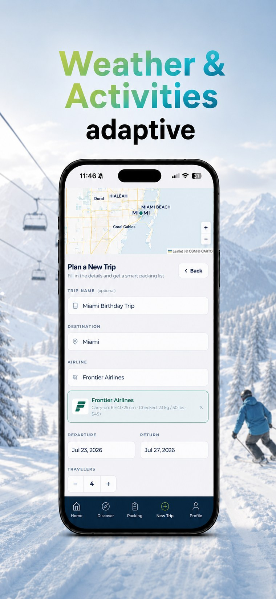
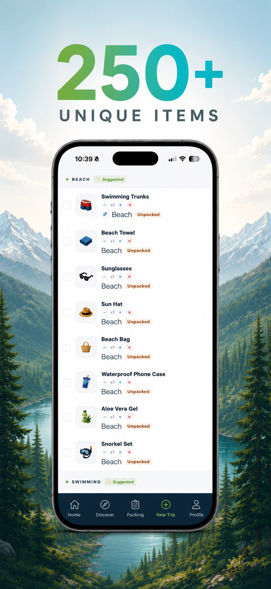
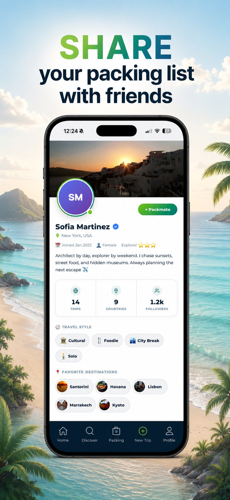

Why travelers pick Packmates AI
Not a chatbot improvising a list — a system built specifically to get packing right.

Built from your real trip, not a guess
Every list is generated from your actual destination, travel dates, and activities — not a one-size-fits-all template or a chatbot improvising an answer.

A real database, not AI hallucination
Items come from a curated database of 250+ packing essentials matched to real conditions, not invented fresh — and inconsistently — every time you ask.

One list, synced live with your group
Every packmate sees the same checklist update in real time — no more "did someone already pack the charger?" texts.
How it works
From blank trip to shared checklist in three steps.
Add your trip
Destination, dates, who's coming, and what you'll be doing.
Get your list
Packmates AI builds a checklist from real weather, location, and activity data.
Pack together
Everyone checks off and adds items live, synced across the whole group.
Adaptive vs. everything else
Common questions
What makes a packing list "adaptive"?
It's generated from your actual trip details instead of a fixed template, and it keeps adjusting as those details change — rather than being a one-time list you have to maintain yourself.
How is this different from just asking a chatbot for a packing list?
A general AI chatbot improvises a new list from scratch every time and has no way to sync it with the people you're traveling with. Packmates AI pulls from a curated database of 250+ real packing items, factors in actual weather and activities, and keeps one shared list live across your whole group.
Does it use real weather data?
Yes. Expected conditions for your destination and travel dates shape what shows up on your list, so weather-specific items only appear when they're actually relevant to your trip.
Can I still edit the list myself?
Always. The generated list is a starting point — check items off, add your own, remove what you don't need, or assign items to specific packmates.
What happens if I change my trip dates or add an activity?
Update your trip in Packmates AI and the list adjusts with it, so you're not stuck rebuilding it or trying to remember what you already added.
See your own adaptive list in seconds
Tell Packmates AI where you're going, when, and what you'll be doing — it builds a checklist from a database of 250+ packing items and keeps it synced with everyone on the trip.
Try it free